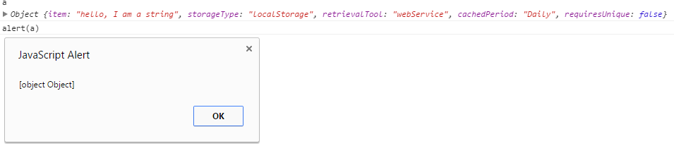

If you're still using alert to echo out values of objects and "made it here" type debugging. You're doing it wrong. There is a much better way using console.log

Alert sucks for debugging. Why? JavaScript is single-threaded (at the moment) and alert is a blocking window which means that the user cannot access any other part of the programs interface until they acknowledge or dismiss the window. For the most part when you are debugging you want to capture some information and continue. For those data dumps you should use console.log. For contextual information you should consider simply using breakpoints.
Console.log has a bunch of really useful features, including a string formatter (%O - letter O, not number 0) which allows you to pass named arguments to the console. For example: console.log('Data value: %O', data[0]);. There are multiple formatters including %s (string), %d\%i (decimal\integer), %f (floating point), %o (expandable DOM element), %O (expandable JavaScript object), %c (formats the output string using css styles you provide.)
Console.table is a really useful command when dealing with large datasets - it will produce a table in your console with all of the elements contained within. You can also pass an optional "columns" array to console.table to restrict what is shown in the table - note: the "columns" array is case sensitive.
Console.count is useful for when you want to monitor how many times a method is called. I often see people using console.log for this. Console.count can also be set up to log values, e.g. login calls for different users.
Console.time is used for calculating how long items take (be careful with async calls as if you use it wrong, it will say an absurdly low number). For example: console.time('adding lots of items to an array'); console.timeEnd('adding lots of items to an array');
debugger; is a really useful command. When placed inside any method it will ensure that the developer tools will always break as if you had placed a breakpoint there. Ensure you actually tidy up after yourself and remove it, however, because I have seen people leave this in production code which drives me nuts.